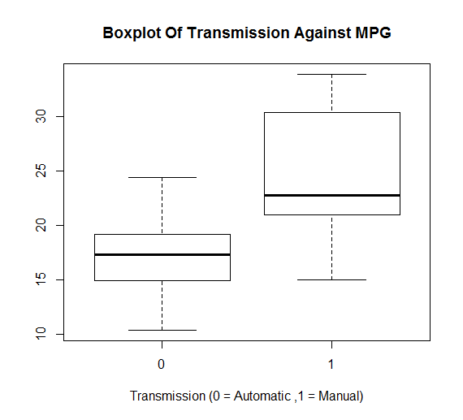
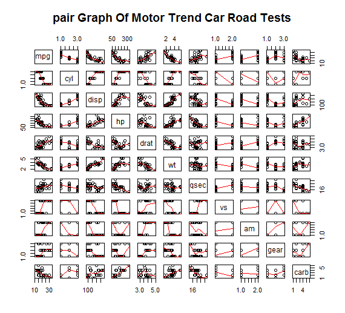
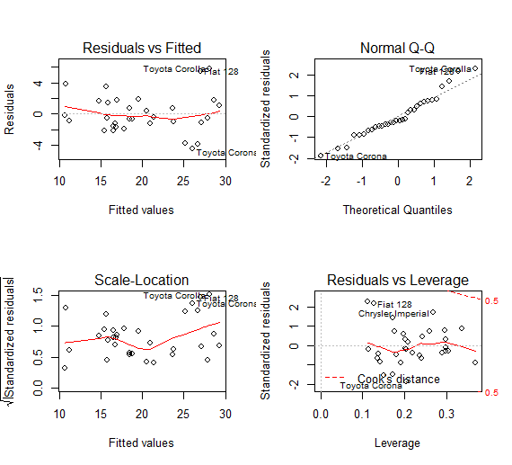

In this report, we will analyze mtcars data set and explore the relationship between a set of variables and miles per gallon (MPG). The data was extracted from the 1974 Motor Trend US magazine, and comprises fuel consumption and 10 aspects of automobile design and performance for 32 automobiles (1973–74 models). We use regression models and exploratory data analyses to mainly explore how Automatic (am = 0) and Manual (am = 1) transmissions features affect the MPG feature. The t-test shows that the performance difference between cars with automatic and manual transmission. And it is about 7 MPG more for cars with manual transmission than those with automatic transmission. Then, we fit several linear regression models and select the one with highest Adjusted R-squared value. So, given that weight and 1/4 mile time are held constant, manual transmitted cars are 14.079 + (-4.141)*weight more MPG (miles per gallon) on average better than automatic transmitted cars. Thus, cars that are lighter in weight with a manual transmission and cars that are heavier in weight with an automatic transmission will have higher MPG values.
First, we load the data set mtcars and change some variables from numeric class to factor class.
library(ggplot2)data(mtcars) mtcars[1:3, ]# Sample Data
## mpg cyl disp hp drat wt qsec vs am gear carb ## Mazda RX4 21.0 6 160 110 3.90 2.620 16.46 0 1 4 4 ## Mazda RX4 Wag 21.0 6 160 110 3.90 2.875 17.02 0 1 4 4 ## Datsun 710 22.8 4 108 93 3.85 2.320 18.61 1 1 4 1
dim(mtcars) ## [1] 32 11
mtcars$cyl <- as.factor(mtcars$cyl) mtcars$vs <- as.factor(mtcars$vs) mtcars$am <- factor(mtcars$am) mtcars$gear <- factor(mtcars$gear) mtcars$carb <- factor(mtcars$carb) attach(mtcars)
## The following objects are masked from mtcars (pos = 3): ## ## am, carb, cyl, disp, drat, gear, hp, mpg, qsec, vs, wt ## ## The following objects are masked from mtcars (pos = 4): ## ## am, carb, cyl, disp, drat, gear, hp, mpg, qsec, vs, wt ## ## The following object is masked from package:ggplot2: ## ## mpg
Then, we do some basic exploratory data analyses. Please refer to the Appendix: Figures section for the plots. According to the box plot, we see that manual transmission yields higher values of MPG in general. And as for the pair graph, we can see some higher correlations between variables like "wt", "disp", "cyl" and "hp".
At this step, we make the null hypothesis as the MPG of the automatic and manual transmissions are from the same population (assuming the MPG has a normal distribution). We use the two sample T-test to show it.
result <- t.test(mpg ~ am) result$p.value ## [1] 0.001373638
result$estimate ## mean in group 0 mean in group 1 ## 17.14737 24.39231
Since the p-value is 0.00137, we reject our null hypothesis. So, the automatic and manual transmissions are from different populations. And the mean for MPG of manual transmitted cars is about 7 more than that of automatic transmitted cars.
mtcars is a data frame with 32 observations on 11 variables. Frist, using scatter plot matrices to show the data, as Figure 2 in appendix. Here you can see the bivariate relationship among all the variables. And the variable of mtcars$vs and mtcars$am should be category variables. So fix it.
mtcars$vs <- as.factor(mtcars$vs) mtcars$am <- as.factor(mtcars$am)
We mainly focus on the relationship between variables mpg (Miles/(US) gallon) and am (Transmission). Box plot shows that there's a good separation of groups based on gas mileage.
boxplot(mpg ~ am, data = mtcars, xlab = "Transmission (0 = automatic, 1 = manual)")
But there are 10 predictor variables in the data set. Some may play bigger role to determination of mpg. An analysis of variance model is performed, as:
analysis <- aov(mpg ~ ., data = mtcars)
summary(analysis)
## Df Sum Sq Mean Sq F value Pr(>F) ## cyl 1 818 818 116.42 5e-10 *** ## disp 1 38 38 5.35 0.0309 * ## hp 1 9 9 1.33 0.2610 ## drat 1 16 16 2.34 0.1406 ## wt 1 77 77 11.03 0.0032 ** ## qsec 1 4 4 0.56 0.4617 ## vs 1 0 0 0.02 0.8932 ## am 1 14 14 2.06 0.1659 ## gear 1 1 1 0.14 0.7137 ## carb 1 0 0 0.06 0.8122 ## Residuals 21 147 7 ## --- ## Signif. codes: 0 '***' 0.001 '**' 0.01 '*' 0.05 '.' 0.1 ' ' 1
Obviously, variables with p-value below 0.05 are more important. We choose cyl, disp, wt, drat, am as predictor variables for first model.
lm <- lm(mpg ~ cyl + disp + wt + drat + am, data = mtcars)
summary(lm)
## ## Call: ## lm(formula = mpg ~ cyl + disp + wt + drat + am, data = mtcars) ## ## Residuals: ## Min 1Q Median 3Q Max ## -4.318 -1.383 -0.473 1.323 6.060 ## ## Coefficients: ## Estimate Std. Error t value Pr(>|t|) ## (Intercept) 41.29638 7.53839 5.48 9.6e-06 *** ## cyl -1.79400 0.65054 -2.76 0.0105 * ## disp 0.00737 0.01232 0.60 0.5546 ## wt -3.58704 1.21050 -2.96 0.0064 ** ## drat -0.09363 1.54878 -0.06 0.9523 ## am1 0.17298 1.53004 0.11 0.9109 ## --- ## Signif. codes: 0 '***' 0.001 '**' 0.01 '*' 0.05 '.' 0.1 ' ' 1 ## ## Residual standard error: 2.69 on 26 degrees of freedom ## Multiple R-squared: 0.833, Adjusted R-squared: 0.801 ## F-statistic: 25.9 on 5 and 26 DF, p-value: 2.53e-09
Coefficient of drat has a p-value of 0.95226, refine the model as:
ts<- lm(mpg ~ cyl + disp + wt + am, data = mtcars)
summary(lm)
## ## Call: ## lm(formula = mpg ~ cyl + disp + wt + am, data = mtcars) ## ## Residuals: ## Min 1Q Median 3Q Max ## -4.318 -1.362 -0.479 1.354 6.058 ## ## Coefficients: ## Estimate Std. Error t value Pr(>|t|) ## (Intercept) 40.8983 3.6015 11.36 8.7e-12 *** ## cyl -1.7842 0.6182 -2.89 0.0076 ** ## disp 0.0074 0.0121 0.61 0.5451 ## wt -3.5834 1.1865 -3.02 0.0055 ** ## am1 0.1291 1.3215 0.10 0.9229 ## --- ## Signif. codes: 0 '***' 0.001 '**' 0.01 '*' 0.05 '.' 0.1 ' ' 1 ## ## Residual standard error: 2.64 on 27 degrees of freedom ## Multiple R-squared: 0.833, Adjusted R-squared: 0.808 ## F-statistic: 33.6 on 4 and 27 DF, p-value: 4.04e-10
And remove variable disp, now the model is:
ts<- lm(mpg ~ cyl + wt + am, data= mtcars)
summary(lm)
## ## Call: ## lm(formula = mpg ~ cyl + wt + am, data = mtcars) ## ## Residuals: ## Min 1Q Median 3Q Max ## -4.173 -1.534 -0.539 1.586 6.081 ## ## Coefficients: ## Estimate Std. Error t value Pr(>|t|) ## (Intercept) 39.418 2.641 14.92 7.4e-15 *** ## cyl -1.510 0.422 -3.58 0.0013 ** ## wt -3.125 0.911 -3.43 0.0019 ** ## am1 0.176 1.304 0.14 0.8933 ## --- ## Signif. codes: 0 '***' 0.001 '**' 0.01 '*' 0.05 '.' 0.1 ' ' 1 ## ## Residual standard error: 2.61 on 28 degrees of freedom ## Multiple R-squared: 0.83, Adjusted R-squared: 0.812 ## F-statistic: 45.7 on 3 and 28 DF, p-value: 6.51e-11
The adjusted r-squared is 0.83 and this is our final model.Clearly,with cylinders and weights as confounding variables,the coefficient of the am variable is small but has a large p-value.We cannot reject the hypothesis is that the coefficient of am is 0.
Please refer to the Appendix: Figures section for the plots. According to the residual plots, we can verify the following underlying assumptions:
1. The Residuals vs. Fitted plot shows no consistent pattern, supporting the accuracy of the independence assumption.
2. The Normal Q-Q plot indicates that the residuals are normally distributed because the points lie closely to the line.
3. The Residuals vs. Leverage argues that no outliers are present, as all values fall well within the 0.5 bands.
1. Boxplot of MPG vs. Transmission
We mainly focus on the relationship between variables mpg(Miles/US(gallon)) & am(Transmission).Box plot shows that separation of groups based on gas milage.
boxplot(mpg ~ am, xlab="Transmission (0 = Automatic, 1 = Manual)", ylab="MPG",main="Boxplot of MPG vs. Transmission")

2. Pair Graph of Motor Trend Car Road Tests
pairs(mtcars, panel=panel.smooth, main="Pair Graph of Motor Trend Car Road Tests")

3. Residual Plots
To diagnostic the model,We apply the plot() to the object returned by the lm().There is no discernible pattern found according to upper left graph.The normal Q-Q plot(Upper right)indicates the model met the normality assumption.Scale-Location graph(bottom left)shows constant variance assumption are satisfied.
par(mfrow = c(2, 2)) plot(lm)
